컴퓨터활용능력-1급 (2013-03-09 기출문제)
1과목: 컴퓨터 일반
1. 다음 중 CPU가 프로그램의 명령어를 수행하는 중에 산술 및 논리 연산의 결과를 일시적으로 저장하는 레지스터로 옳은 것은?
- 주소 레지스터(MAR)
- 누산기(AC)
- 명령어 레지스터(IR)
- 프로그램 카운터(PC)
(정답률: 69%)

2. 다음 중 한글 Windows XP의 [로컬 영역 연결 속성] 창에 있는 [일반] 탭에서 설치하거나 제거할 수 있는 네트워크 구성 요소로 옳지 않은 것은?
- Microsoft 네트워크용 클라이언트
- Microsoft 네트워크용 파일 및 프린터 공유
- 인터넷 프로토콜(TCP/IP)
- 인터넷 방화벽
(정답률: 58%)
3. 다음 중 LAN에 연결된 컴퓨터에서 고정 IP 주소로 인터넷에 접속하기 위해 설정해야 할 인터넷 프로토콜(TCP/IP) 항목으로 옳지 않은 것은?
- IP 주소
- 게이트웨이 주소
- DNS 서버 주소
- DHCP 서버 주소
(정답률: 65%)
4. 다음 중 사용자가 눈으로 보는 현실 화면이나 실제 영상에 문자나 그래픽과 같은 가상의 3차원 정보를 실시간으로 겹쳐 보여주는 새로운 멀티미디어 기술을 의미하는 용어로 옳은 것은?
- 가상 장치 인터페이스 (VDI)
- 가상 현실 모델 언어 (VRML)
- 증강현실(AR)
- 주문형 비디오 (VOD)
(정답률: 81%)
5. 다음 중 7개의 데이터 비트(data bit)와 1개의 패리티 비트(parity bit)를 사용하며, 128개의 문자를 표현할 수 있는 코드로 옳은 것은?
- BCD 코드
- ASCII 코드
- EBCDIC 코드
- UNI 코드
(정답률: 78%)
6. 다음 중 디지털 이미지, 오디오, 비디오 등의 파일에 저작권 정보를 식별할 수 있도록 삽입된 특정한 비트패턴을 의미하는 것은?
- 디지털 기록(Digital Recording)
- 디지털 워터마크(Digital Watermark)
- 디지털 인증서(Digital Certificate)
- 디지털 서명(Digital Signature)
(정답률: 75%)
7. 다음 중 호스트의 IP 주소를 호스트와 연결된 네트워크 접속장치의 물리적 주소로 번역해 주는 프로토콜로 옳은 것은?
- TCP
- UDP
- IP
- ARP
(정답률: 42%)
8. 다음 중 한글 Windows XP에서 사용하는 [사용자 계정]에 관한 설정으로 옳지 않은 것은?(문제 오류로 실제 가답안 발표시 4번으로 발표되었으나 확정답안 발표시 3, 4번이 정답처리 되었습니다. 여기서는 4번을 정답 처리 합니다.)
- 컴퓨터를 공유하는 각 사용자별로 Windows를 설정하며, 고유한 계정이름, 그림 및 암호를 선택하고 개별적으로 적용되는 다른 설정을 선택할 수 있다.
- 개인 파일, 즐겨 찾는 웹 사이트 목록 및 최근 방문한 웹 페이지 목록을 사용자별로 관리할 수 있다.
- 관리자 계정을 가진 사용자가 다른 사용자의 암호를 임의로 변경하면 해당 사용자는 웹 사이트 또는 네트워크 리소스에 대한 저장된 암호 및 개인 인증서를 모두 잃게 된다.
- 사용자별로 로그온하여 작성된 문서는 작성자는 다르지만 같은 컴퓨터를 사용하므로 동일한 위치의 [내 문서] 폴더에 저장된다.
(정답률: 77%)
9. 다음 중 한글 Windows XP에서 [Windows 탐색기] 창의 기능과 구조에 대한 설명으로 옳지 않은 것은?
- 탐색창의 폴더 영역과 파일 영역의 크기를 조절하려면 양쪽 영역을 구분하는 경계선을 좌우로 드래그한다.
- 탐색창의 폴더 영역에서 폴더를 선택한 후에 숫자 키패드의 '/'키를 누르면 선택된 폴더의 모든 하위 폴더를 표시해 준다.
- 탐색창의 폴더 영역에서 폴더를 선택한 후에 왼쪽 방향키(←)를 누르면 선택된 폴더가 열려있을 때는 닫고, 닫혀 있으면 상위 폴더가 선택된다.
- 탐색창의 폴더 영역에서 폴더를 선택한 후 'Backspace' 키를 누르면 상위 폴더가 선택된다.
(정답률: 51%)
10. 다음 중 한글 Windows XP의 [전원 옵션 등록 정보] 대화상자에서 전원 구성표를 설정할 때 시간을 지정을 할 수 없는 것은?
- 모니터 끄기
- 하드디스크 끄기
- 시스템 대기 모드
- 최대 절전 모드
(정답률: 37%)
11. 다음 중 Java 언어에 대한 설명으로 옳지 않은 것은?
- 객체 지향 언어로 추상화, 상속화, 다형성과 같은 특징을 가진다.
- 인터프리터를 이용한 프로그래밍 언어로 특히 인공지능 분야에서 널리 사용되고 있다.
- 네트워크 환경에서 분산 작업이 가능하도록 설계되었다.
- 특정 컴퓨터 구조와 무관한 가상 바이트 머신 코드를 사용하므로 플랫폼이 독립적이다.
(정답률: 55%)
12. 다음은 프린터 설치과정을 설명한 것이다. 올바른 순서로 연결된 것은?(문제 오류로 가답안 발표시 2번으로 발표되었지만 확정답안 발표시 모두 정답처리 되었습니다. 여기서는 2번을 정답 처리 합니다.)
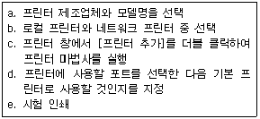
- a-b-c-d-e
- c-b-a-d-e
- d-b-a-c-e
- b-a-c-d-e
(정답률: 80%)
13. 다음 중 디지털 콘텐츠의 제작 및 유통, 보안 등의 모든 과정을 관리할 수 있게 하는 기술 표준을 제시한 MPEG의 종류로 옳은 것은?
- MPEG-3
- MPEG-4
- MPEG-7
- MPEG-21
(정답률: 77%)
14. 다음 중 한글 Windows XP에 설치된 프린터의 인쇄 관리자 창에 관한 설명으로 옳지 않은 것은?
- 인쇄 대기열에 있는 문서의 인쇄를 일시 중지시킬 수 있다.
- [문서]-[취소] 메뉴를 선택하면 일시 중지가 취소되어 문서가 다시 인쇄된다.
- 현재 인쇄가 수행 중인 상태에서 새로운 문서의 인쇄 명령을 하면 인쇄 대기열에 추가된다.
- 인쇄 대기열에 있는 문서의 인쇄 순서를 변경할 수 있다.
(정답률: 75%)
15. 다음 중 데이터 전송에 사용되는 장비에 대한 설명으로 옳지 않은 것은?
- 데이터 전송의 정확성을 보장받기 위하여 라우터를 사용한다.
- 디지털 데이터의 감쇠현상을 방지하기 위해서 리피터를 사용한다.
- 아날로그 데이터의 감쇠현상을 복원하기 위해서 증폭기를 사용한다.
- 모뎀은 디지털 신호와 아날로그 신호를 상호 변환하는 기능을 가진다.
(정답률: 42%)
16. 다음 중 한글 Windows XP에서 네트워크상에 공유된 프린터에 관한 설명으로 옳지 않은 것은?
- 공유된 프린터와 연결된 컴퓨터는 항상 켜져 있어야 네트워크상의 다른 컴퓨터에서 사용할 수 있다.
- 공유된 프린터의 아이콘 그림에는 왼쪽 아래에 체크 표시가 추가되어 다른 프린터와 구별된다.
- 프린터의 공유를 원하면 [프린터 및 팩스] 창에서 해당 프린터의 바로 가기 메뉴에서 [공유]를 선택하여 설정한다.
- 한 대의 컴퓨터에 동일한 네트워크에 존재하는 공유된 프린터를 여러 대 설정할 수 있다.
(정답률: 36%)
17. 다음 중 컴퓨터에서 사용하는 펌웨어에 관한 설명으로 옳은 것은?
- 하드웨어의 교체없이 소프트웨어 업그레이드 만으로도 시스템 성능을 개선할 수 있다.
- 컴퓨터를 더욱 효율적으로 사용하기 위한 전기, 전자적 장치이다.
- 주로 캐시 메모리에 일시적으로 저장되어 하드웨어를 제어 또는 관리하는 역할을 한다.
- 컴퓨터 바이러스의 일종으로 시스템의 성능을 저하시킬 수 있으므로 가급적 사용하지 않아야 한다.
(정답률: 76%)
18. 다음 중 다양한 정보의 데이터베이스를 구축하여 사용자가 요구하는 정보를 원하는 시간에 서비스 받을 수 있는 멀티미디어 서비스를 무엇이라 하는가?
- 폴링(Polling)
- P2P(Peer-to-Peer)
- VCS(Video Conference System)
- VOD(Video-On-Demand)
(정답률: 50%)
19. 다음 중 컴퓨터 네트워크와 관련하여 인트라넷(Intranet)에 대한 설명으로 옳은 것은?
- 음성이나 비디오 등의 아날로그 신호를 전송에 적합한 디지털 신호로 변환하고, 그 역의 작업을 수행하는 네트워크 장치이다.
- 기업체, 연구소 등 조직 내부의 각종 업무를 인터넷 기술을 활용하여 손쉬운 방법으로 처리할 수 있도록 한 것이다.
- 지역적으로 분산된 여러 대의 컴퓨터를 연결하여 작업을 분담하여 처리하는 네트워크 형태이다.
- 기업체가 협력업체와 고객간의 정보 공유를 목적으로 구성한 네트워크이다.
(정답률: 80%)
20. 다음 내용이 설명하는 운영체제의 운영방식으로 옳은 것은?
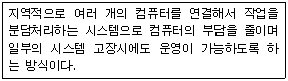
- 분산처리 시스템
- 시분할 시스템
- 다중처리 시스템
- 다중 프로그래밍 시스템
(정답률: 67%)
2과목: 스프레드시트 일반
21. 다음 중 시나리오에 대한 설명으로 옳지 않은 것은?
- 시나리오 관리자에서 시나리오를 삭제하면 시나리오 요약 보고서의 해당 시나리오도 자동적으로 삭제된다.
- 특정 셀의 변경에 따라 연결된 결과 셀의 값이 자동으로 변경되어 결과값을 예측할 수 있다.
- 여러 시나리오를 비교하기 위해 시나리오를 피벗 테이블로 요약할 수 있다.
- 변경 셀과 결과 셀에 이름을 지정한 후 시나리오 요약 보고서를 작성하면 결과에 셀 주소 대신 지정한 이름이 표시된다.
(정답률: 65%)
22. 다음 중 항목의 구성비를 표현하는데 적합한 차트인 원형차트 및 도넛형 차트에 대한 설명으로 옳지 않은 것은?
- 원형 차트의 모든 조각을 차트 중심에서 끌어낼 수 있다.
- 도넛형 차트는 원형 차트와 마찬가지로 전체에 대한 각 부분의 구성비를 보여 주지만 데이터 계열이 두 개 이상 포함될 수 있다는 점이 다르다.
- 원형 차트는 첫째 조각의 각을 0도에서 360도 사이의 값을 이용하여 회전시킬 수 있으나 도넛형 차트는 첫째 조각의 각을 회전시킬 수 없다.
- 도넛형 차트의 도넛 구멍 크기는 10%에서 90% 사이의 값으로 변경 할 수 있다.
(정답률: 62%)
23. 다음 워크시트에서 [A]열의 사원코드 중 첫 문자가 A 이면 50, B 이면 40, C 이면 30의 기말수당을 지급하고자 할 때 수식으로 옳은 것은?
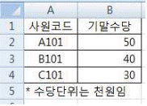
- =IF(LEFT(A2,1)="A",50,IF(LEFT(A2,1)="B",40,30))
- =IF(RIGHT(A2,1)="A",50,IF(RIGHT(A2,1)="B",40,30))
- =IF(LEFT(A2,1)='A',50,IF(LEFT(A2,1)='B',40,30))
- =IF(RIGHT(A2,1)='A',50,IF(RIGHT(A2,1)='B',40,30))
(정답률: 66%)
24. 다음 중 엑셀의 데이터 입력에 관한 설명으로 옳지 않은 것은?
- 한 셀에 여러 줄로 데이터를 입력 하려면 Alt + Enter를 누르면 된다.
- 데이터 입력 도중 입력을 취소하려면 Esc키나 [빠른 실행 도구 모음]의 '취소'버튼을 클릭한다.
- 여러 셀에 동일한 내용을 입력하려면 해당 셀을 범위로 지정한 후 데이터를 입력하고 Shift + Enter를 누른다.
- 특정 부분을 범위로 지정한 후 데이터를 입력하고 Enter를 누르면 셀 포인터가 지정한 범위 안에서만 이동한다.
(정답률: 66%)
25. 다음 설명하는 차트의 종류로 옳은 것은?
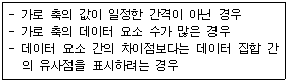
- 주식형 차트
- 분산형 차트
- 영역형 차트
- 방사형 차트
(정답률: 65%)
26. 다음 화면은 하나의 페이지를 '페이지 나누기를 이용하여 6 페이지로 나눈 것이다. '페이지 나누기 미리 보기 화면'에서 페이지 분할선을 해제하려면 마우스 오른쪽 버튼을 눌러 나타나는 메뉴 중 어느 것을 선택하면 되는가?
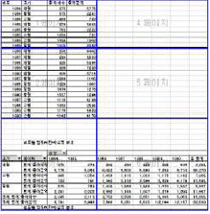
- 페이지 설정
- 인쇄 영역 설정
- 페이지 나누기 모두 원래대로
- 인쇄 영역 다시 설정
(정답률: 68%)
27. 통합 문서를 열 때마다 특정 작업이 자동으로 수행되는 매크로를 작성하려고 한다. 이때 사용해야 할 매크로 이름으로 옳은 것은?
- Auto_Open
- Auto_Exec
- Auto_Macro
- Auto_Start
(정답률: 51%)
28. 다음 중 피벗 테이블에 대한 설명으로 옳지 않은 것은?
- 피벗 차트 보고서는 피벗 테이블 보고서를 만들지 않고는 만들 수 없으며, 피벗 테이블과 피벗 차트를 함께 만든 후 피벗 테이블을 삭제하면 피벗 차트는 일반 차트로 변경된다.
- 피벗 테이블 보고서에서 필드 단추를 다른 열이나 행의 위치로 끌어다 놓으면 데이터 표시형식이 달라진다.
- 피벗 테이블 보고서는 엑셀에서 작성된 데이터를 대상으로 새로운 대화형 테이블을 만드는데 사용하며 외부 액세스 데이터베이스에서 만들어진 데이터는 호환되지 않으므로 사용할 수 없다.
- 피벗 테이블 보고서를 이용하면 가장 유용하고 관심이 있는 하위 데이터 집합에 대해 필터, 정렬, 그룹 및 조건부 서식을 적용하여 원하는 정보만 강조할 수 있다.
(정답률: 58%)
29. 다음 프로시저가 실행된 후 Total 값으로 옳은 것은?
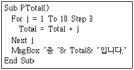
- 17
- 22
- 12
- 10
(정답률: 58%)
30. 다음 중 워크시트의 셀 구분선을 그대로 인쇄하기위한 설정 방법으로 옳은 것은?
- 페이지 설정 대화상자의 [시트] 탭에서 '눈금선'을 선택한다.
- 페이지 설정 대화상자의 [페이지] 탭에서 '눈금선'을 선택한다.
- 페이지 설정 대화상자의 [여백] 탭에서 '눈금선'을 선택한다.
- 페이지 설정 대화상자의 [머리글/바닥글] 탭에서 '눈금선'을 선택한다.
(정답률: 55%)
31. 다음 중 데이터 정렬에 관한 설명으로 옳지 않은 것은?
- 머리글 행이 없는 데이터도 원하는 기준으로 정렬이 가능하다.
- 영문자의 경우 대/소문자를 구분하여 정렬할 수있으며, 오름차순으로 정렬하면 소문자가 우선순위를 갖는다.
- 글꼴에 지정된 색을 기준으로 정렬하려면 정렬 기준을 '셀 색'으로 설정한다.
- 기본 내림차순 정렬은 오류값>논리값>문자>숫자>빈셀의 순으로 정렬된다.
(정답률: 50%)
32. 다음 중 10,000,000원을 2년간 대출할 때 연 5.5%의 이자율이 적용된다면 매월 말 상환해야 할 불입액을 구하기 위한 수식으로 옳은 것은?
- =PMT(5.5%/12, 24, -10000000)
- =PMT(5.5%, 24, -10000000)
- =PMT(5.5%, 24, -10000000,0,1)
- =PMT(5.5%/12, 24, -10000000,0,1)
(정답률: 61%)
33. 엑셀에서 데이터를 정렬하려는데 다음과 같은 정렬 경고 대화상자가 표시되었다. 다음 중 옳지 않은 것은?
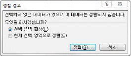
- 이 정렬 경고 대화상자는 표 범위에서 하나의 열만 범위로 선택한 경우에 발생한다.
- 인접한 데이터를 포함하기 위해 선택영역을 늘리려면 '선택 영역 확장'을 선택한다.
- 이 정렬 경고 대화상자는 셀 포인터가 표 범위 내에 있지 않기 때문에 발생한다.
- '현재 선택 영역으로'를 선택하면 현재 설정한 열만을 정렬 대상으로 선택한다.
(정답률: 55%)
34. 아래 시트에서 [C1] 셀에 수식 =A1+B1+C1을 입력할 경우 발생하는 오류에 대한 설명으로 옳은 것은?
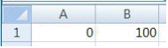
- #DIV/0! 오류
- #NUM! 오류
- #REF! 오류
- 순환 참조 경고
(정답률: 55%)
35. 아래 시트에서 윤정희의 근속년을 2012년을 기준으로 구하고자 한다. 다음 중 [E11] 셀에 입력할 수식으로 옳은 것은?
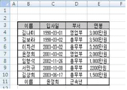
- =2012+YEAR(HLOOKUP(C11,$B$3:$E$10,2,0))
- =2012-YEAR(HLOOKUP(C11,$B$3:$E$10,2,1))
- =2012+YEAR(VLOOKUP(C11,$B$3:$E$10,2,0))
- =2012-YEAR(VLOOKUP(C11,$B$3:$E$10,2,0))
(정답률: 51%)
36. 다음 중 작성된 매크로를 실행하는 방법으로 옳지 않은 것은?
- 매크로 대화상자에서 매크로를 선택하여 실행한다.
- 매크로를 작성할 때 지정한 바로 가기 키를 이용하여 실행한다.
- 매크로를 지정한 도형을 클릭하여 실행한다.
- 매크로가 적용되는 셀의 바로 가기 메뉴를 이용하여 실행한다.
(정답률: 54%)
37. 다음 프로시저를 실행한 결과에 대한 설명으로 옳은 것은?
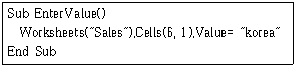
- Sales 시트의 [A1] 셀에 korea를 입력한다.
- Sales 영역의 [A1:A6] 셀에 korea를 입력한다.
- Sales 시트의 [A6] 셀에 korea를 입력한다.
- Sales 시트의 [F1] 셀에 korea를 입력한다.
(정답률: 61%)
38. 다음 중 3을 넣으면 화면에 3000이 입력되는 것처럼 일정한 소수점의 위치를 지정하여 입력을 빠르게 하기 위한 방법으로 옳은 것은?
- [Excel 옵션]-[수식]-[데이터 범위의 서식과 수식을 확장]에서 소수점의 위치를 지정한다.
- [Excel 옵션]-[고급]-[소수점 자동 삽입]에서 소수점의 위치를 지정한다.
- [Excel 옵션]-[편집]-[셀에서 직접 편집]에서 소수점의 위치를 지정한다.
- [Excel 옵션]-[고급]-[셀 내용 자동 완성]에서 소수점의 위치를 지정한다.
(정답률: 63%)
39. 다음 중 한자와 특수문자 입력에 대한 설명으로 옳지 않은 것은?
- 한글 자음 중 하나를 입력한 후 <한자> 키를 누르면 화면 하단에 특수문자 목록이 표시된다.
- '국'과 같이 한자의 음이 되는 글자를 한 글자를 입력한 후 <한자> 키를 누르면 화면 하단에 해당 글자에 대한 한자 목록이 표시된다.
- 한글 모음을 입력한 후 <한자> 키를 이용하면 그리스 문자를 편리하게 사용할 수 있다.
- 한글 자음에 따라서 화면 하단에 표시되는 특수 문자가 다르다.
(정답률: 67%)
40. 다음 중 아래의 빈칸 (ㄱ)과 (ㄴ)에 들어갈 내용으로 옳은 것은?
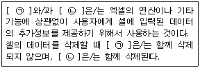
- (ㄱ) : 메모 (ㄴ) : 윗주
- (ㄱ) : 윗주 (ㄴ) : 메모
- (ㄱ) : 메모 (ㄴ) : 회람
- (ㄱ) : 회람 (ㄴ) : 메모
(정답률: 65%)
3과목: 데이터베이스 일반
41. 다음 중 관계형 데이터베이스에서 사용되는 용어에 대한 설명으로 옳은 것은?
- 도메인(Domain) : 테이블에서 행을 나타내는 말로 레코드와 같은 의미
- 튜플(Tuple) : 하나의 속성이 취할 수 있는 값의 집합
- 속성(Attribute) : 테이블에서 열을 나타내는 말로 필드와 같은 의미
- 차수(Degree) : 한 릴레이션에서의 튜플의 갯수
(정답률: 44%)
42. 다음 중 레코드가 추가될 때마다 시스템에서 자동으로 값을 입력해주며 업데이트나 수정이 불가능한 데이터 형식은?
- 텍스트
- 숫자
- 일련번호
- 예/아니오
(정답률: 69%)
43. 다음 중 폼에서 [Alt]+[t]키를 눌렀을 때 폼에 삽입된 단추 컨트롤을 클릭했을 때와 동일하게 동작하도록 설정하는 방법은?
- 명령 단추의 단축키 속성에 T를 입력한다.
- 캡션 속성에 &T 라는 글자를 포함시킨다.
- 명령 단추의 이름을 T로 지정한다.
- 명령 단추의 이름에 _T라는 글자를 포함시킨다.
(정답률: 41%)
44. 폼에서 텍스트 상자 컨트롤에 데이터를 입력하려고 한다. 다음 중 해당 컨트롤에 포커스가 위치한 경우 입력모드를 '한글' 또는 '영숫자반자'와 같은 입력상태로 지정하려고 할 때 사용하는 컨트롤의 속성으로 옳은 것은?
- 엔터키 기능(EnterKey Behavior )
- 상태표시줄( StatusBar Text )
- 탭 인덱스(Tab Index )
- 입력 시스템 모드(IME Mode)
(정답률: 74%)
45. 테이블에서 이미 작성된 필드의 순서를 변경하려고 할 때 옳지 않은 것은?
- 데이터시트 보기에서 이동시킬 필드를 선택한 후 새로운 위치로 드래그 앤 드롭 하여 필드를 이동시킬 수 있다.
- 디자인 보기에서 이동시킬 필드를 선택한 후 새로운 위치로 드래그 앤 드롭 하여 필드를 이동시킬 수 있다.
- 디자인 보기에서 한번에 여러 개의 필드를 선택한 후 이동시킬 수 있다.
- 데이터시트 보기에서 「잘라내기」와 「붙여넣기」를 이용하여 필드를 이동시킬 수 있다.
(정답률: 45%)
46. 다음 보고서에 대한 설명으로 옳지 않은 것은? 단, 보고서는 전체 7페이지이며, 현재 페이지는 4페이지이다.
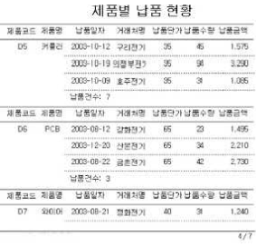
- '제품별 납품 현황'을 표시하는 제목은 보고서 머리글에 작성하였다.
- '그룹화 및 정렬' 옵션 중 '같은 페이지에 표시 안함'을 설정하였다.
- '제품코드'에 대한 그룹 머리글과 그룹 바닥글을 모두 만들었다.
- '제품코드'와 '제품명'을 표시하는 컨트롤의 '중복 내용 숨기기' 속성을 '예'로 설정하였다.
(정답률: 39%)
47. 다음 중 외부 데이터 가져오기 기능을 이용하여 액세스로 가져올 수 없는 데이터 형식은?
- dBASE 파일
- Lotus 1-2-3 파일
- HWP 파일
- 텍스트 파일
(정답률: 59%)
48. 다음 중 하위 폼에서 새로운 레코드를 추가하려고 할 때 설정해야 할 폼 속성은?
- '필터 사용'을 예로 설정한다.
- '추가 가능'을 예로 설정한다.
- '편집 가능'을 예로 설정한다.
- '삭제 가능'을 예로 설정한다
(정답률: 65%)
49. 다음과 같이 페이지 번호를 출력하고자 할 때의 수식으로 옳은 것은?
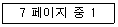
- =[Page]& 페이지 중& [Pages]
- =[Pages]& 페이지 중& [Page]
- =[Page]& " 페이지 중 "& [Pages]
- =[Pages]& " 페이지 중 "& [Page]
(정답률: 67%)
50. 폼이나 보고서의 특정 컨트롤에서 '=[단가]*[수량]*(1-[할인률])'과 같은 계산식을 사용하고자 한다. 이 때 계산 결과를 소수점 이하 첫째자리까지 표시하기 위한 함수는?
- Clng()
- Val()
- Format()
- DLookUp()
(정답률: 60%)
51. 다음 중 SQL문에서 HAVING문을 사용하여 조건을 설정할 수 있는 것은?
- GROUP BY 절
- LIKE 절
- WHERE 절
- ORDER BY 절
(정답률: 63%)
52. 다음 중 보고서 작성시 레코드 정렬에 대한 설명으로 옳은 것은?
- 보고서에서 필드나 식을 기준으로 7개까지 정렬할 수 있다.
- 특정 필드를 기준으로 오름차순 또는 내림차순으로 정렬할 수 있다.
- 정렬할 필드나 식을 선택하면 기본적으로 내림차순으로 설정된다.
- 그룹에 대해서는 머리글이나 바닥글을 표시할 수 없다.
(정답률: 58%)
53. 다음과 같은 [회비납부] 테이블을 이용하여 월별로 납부금액의 합계를 계산하는 SQL 문으로 옳은 것은?
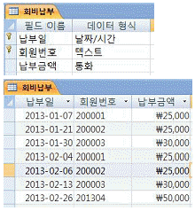
- select month(납부일) as 월, sum(납부금액) from 회비납부 where year(납부일) = year(date()) group by 납부일
- select month(납부일) as 월, sum(납부금액) from 회비납부 where year(납부일) = year(date()) group by month(납부일)
- select month(납부일) as 월, sum(납부금액) from 회비납부 group by 납부일 where year(납부일) = year(date())
- select month(납부일) as 월, sum(납부금액) from 회비납부 group by month(납부일) where year(납부일) = year(date())
(정답률: 46%)
54. 다음 중 쿼리에 대한 설명으로 옳지 않은 것은?
- 쿼리는 테이블의 데이터를 이용하여 사용자가 원하는 형식으로 가공하여 보여줄 수 있다.
- 테이블이나 다른 쿼리를 이용하여 새로운 쿼리를 생성할 수 있다.
- 쿼리는 단순한 조회 이외에도 데이터의 추가, 삭제, 수정 등을 수행할 수 있다.
- 쿼리를 이용하여 추출한 결과는 폼과 보고서에서만 사용할 수 있다.
(정답률: 66%)
55. 다음 중 하위 폼에 대한 설명으로 옳지 않은 것은?
- 하위 폼은 테이블, 쿼리나 다른 폼을 이용하여 작성할 수 있다.
- 연결된 기본 폼과 하위 폼 모두 연속 폼의 형태로 표시할 수 있다.
- 사용할 수 있는 하위 폼의 개수에는 제한이 없으나, 하위 폼의 중첩은 7개 수준까지만 가능하다.
- 기본 폼과 하위 폼을 연결할 필드의 데이터 형식은 같거나 호환되어야 한다.
(정답률: 42%)
56. 다음 데이터베이스 관련 용어 중에서 성격이 다른 것은?
- DDL
- DBA
- DML
- DCL
(정답률: 65%)
57. 다음 중 Recordset 개체에 대한 설명으로 옳지 않은 것은?
- Recordset 개체는 레코드(행)와 필드(열)를 사용하여 구성된다.
- 테이블에서 가져온 레코드를 임시로 저장해 두는 레코드 집합이다.
- 공급자가 지원하는 기능에 관계없이 Recordset의 속성이나 메소드를 사용할 수 있다.
- Recordset 개체는 언제나 현재 레코드의 설정 내에서 단일 레코드만 참조한다.
(정답률: 37%)
58. 다음 중 서로 관계를 맺고 있는 릴레이션 R1과 R2 에서 릴레이션 R2의 한 속성이나 속성의 조합이 릴레이션 R1의 기본 키인 것을 무엇이라고 하는가?
- 대체 키(Alternate Key)
- 슈퍼 키(Super Key)
- 후보 키(Candidate Key)
- 외래 키(Foreign Key)
(정답률: 64%)
59. 다음 중 보고서의 원본으로 사용할 수 없는 것은?
- 폼
- 쿼리
- 테이블
- SQL 구문
(정답률: 40%)
60. 다음 중 함수에 대한 설명으로 옳지 않은 것은?
- ROUND() : 인수로 입력한 숫자를 지정한 자리수로 반올림해 준다.
- DSUM() : 지정된 레코드 집합에서 해당 필드 값의 합계를 계산할 수 있다.
- INSTR() : 문자열에서 특정한 문자 또는 문자열이 존재하는 위치를 구해 준다.
- VALUE() : 문자열에 포함된 숫자를 적절한 형식의 숫자 값으로 반환한다.
(정답률: 47%)